第六章:扩大规模
前一章是关于如何通过不同的部署模式将我们的解决方案推向世界，以及我们可以使用的一些工具。本章旨在通过讨论我们可以用来扩展我们的解决方案以处理大量数据或流量的概念和工具来建立这种对话。
在你的笔记本电脑上的几千个数据点上运行一些简单的机器学习 ( ML )模型是一个很好的练习，特别是当你正在执行我们之前在任何ML开发项目开始时概述的发现和概念验证步骤时。然而，如果我们必须以相对较高的频率运行数百万个数据点，或者如果我们必须同时训练数千个类似规模的模型，这种方法就不合适。这需要不同的方法、心态和工具包。
在接下来的几页中，我们将详细介绍当今最流行的分布式数据计算框架:Apache Spark。特别是，我们将讨论一些关于它如何工作的关键点，以便在开发过程中，我们可以做出一些关于如何使用它的好决定，然后继续讨论一些我们可以在Spark中使用的ML方法。这将帮助你建立在我们在本书前面已经看过的一些实际例子的基础上，当我们使用Spark解决我们的ML问题时，提供了一些更具体的理论理解和更详细的实际例子。此后，您将学习如何通过使用无服务器功能来扩展您的基础架构。然后，我们将简要介绍使用 Kubernetes ( K8s )集群背后的一些理论。第一种方法提供了一种机制，可以让简单的模型非常快速地向外扩展。第二种方式允许您保留集装箱化的优势，但也可以横向扩展。最后，我们将像往常一样，总结一下我们所学的内容。
在本章中，我们将讨论以下主题:
- 用火花缩放
- 加速无服务器基础架构
- 用Kubernetes大规模集装箱化
技术要求
要运行本章中的示例，您需要安装以下工具和软件包:
- Apache Spark(版本3.0.0或更高)
- 饭桶
- AWS CLI v2
用火花进行缩放
Apache Spark来自2012年加州大学伯克利分校的一些杰出研究人员的工作，从那时起，它彻底改变了我们处理大型数据集的方式。在Spark之前，大数据的主导范式是 Hadoop MapReduce ，现在已经不那么流行了。
Spark是一个集群计算框架，这意味着它的工作原理是几台计算机以一种允许共享计算任务的方式连接在一起。这使得我们能够有效地协调这些任务。每当我们讨论运行Spark作业时，我们总是谈论我们正在运行的集群。这是执行任务的计算机、工作节点和承载组织工作负载的计算机(称为头节点)的集合。
Spark是用Scala编写的，Scala是一种功能性很强的语言，可以编译成Java虚拟机。由于这是一本关于Python中ML工程的书，我们不会过多讨论Spark的底层Scala组件，除非它们能帮助我们在工作中使用它。Spark有几个流行的API，允许程序员用它开发各种语言，包括Python。这就产生了我们在本书的几个例子中使用的PySpark语法。
那么，这些是如何组合在一起的呢？
首先，Apache Spark如此受欢迎的原因之一是它提供了大量的连接器、组件和API。例如，四个主要部件与火花芯连接:
- Spark SQL、DataFrames和Datasets :这个组件允许你创建非常可伸缩的程序来处理结构化数据。通过Spark的一个主要结构化API(Python、Java、Scala或R)编写符合SQL的查询和创建利用底层Spark引擎的数据表(T23)的能力，使Spark的主要功能非常容易访问。
- Spark结构化流:该组件允许工程师处理流数据，例如，由Apache Kafka等解决方案提供的流数据。该设计非常简单，允许开发人员简单地处理流数据，就好像它是一个不断增长的Spark结构化表，具有与标准表相同的查询和操作功能。这为创建可扩展的流解决方案提供了一个低门槛。
- Databricks的项目让我们能够在Spark中使用基于数据帧的API，同时还能分析图形数据，从而使这一功能更加易于使用。
DataFrame库中的API非常容易使用，同时仍然给我们提供了一条途径来创建非常强大的代码。与在单线程上运行另一个ML库相比，通过在Spark集群上使用Spark MLlib，您可以为ML训练获得巨大的潜在加速。我们可以将其他技巧应用到我们最喜欢的ML实现中，然后使用Spark来扩展它们；我们稍后再看这个。
Spark的架构基于驱动/执行器架构。驱动程序是充当Spark应用程序主入口的程序，也是创建SparkContext对象的地方。SparkContext向执行器发送任务(执行器运行在自己的JVM上),并以适合给定管理器和解决方案运行模式的方式与集群管理器通信。驱动程序的主要任务之一是将我们编写的代码转换为一组逻辑步骤，这些步骤位于一个有向无环图 ( DAG )(与我们在 第5章 、部署模式和工具中使用的Apache Airflow的概念相同)，然后将该DAG转换为一组需要在可用计算资源上执行的任务。
在接下来的页面中，我们将假设我们正在使用 Hadoop YARN 资源管理器运行Spark，这是最受欢迎的选项之一，默认情况下 AWS Elastic Map Reduce 解决方案也使用它(稍后将详细介绍)。当在集群模式下运行 YARN 时，驱动程序在YARN集群上的一个容器中运行，这允许客户端通过驱动程序提交作业或请求，然后退出(而不是要求客户端保持与集群管理器的连接，这可能发生在您运行在所谓的客户端模式下时，我们不会在此讨论)。
集群管理器负责跨集群上可用的资源启动执行器。
作为ML工程师，Spark的架构允许我们使用相同的API和语法构建解决方案，无论我们是在笔记本电脑上本地工作还是在具有数千个节点的集群上工作。驱动程序、资源管理器和执行者之间的联系使得这种神奇的事情发生。
火花的小技巧和窍门
在这一小节中，我们将介绍一些使用Spark编写高性能解决方案的简单而有效的技巧。我们将关注针对数据操作和准备的关键语法，正如本书其他地方所讨论的，这总是任何基于ML的解决方案管道的第一步。让我们开始吧:
- 首先，我们将介绍编写优秀Spark SQL的基础知识。任何Spark程序的入口点都是
SparkSession对象，我们需要在应用程序中导入它的一个实例。它通常用spark变量来实例化:from pyspark.sql import SparkSession spark = SparkSession \ .builder \ .appName("Spark SQL Example") \ .config("spark.some.config.option", "some-value") \ .getOrCreate() - You can then run Spark SQL commands against your available data using the
sparkobject and thesqlmethod:spark.sql('''select * from data_table''')有多种方法使您需要的数据在您的Spark程序中可用，这取决于它们存在的位置。下面的例子摘自我们在第3章 、从模型到模型工厂中所学的一些代码，展示了如何从
csv文件中提取数据到dataframe:data = spark.read.format("csv")\ .option("sep", ";")\ .option("inferSchema", "true")\ .option("header", "true").load( "../../chapter1/stream-classifier/data/bank/bank.csv") - 现在，我们可以使用下面的语法创建这个数据的临时视图:
data.createOrReplaceTempView('data_view') - 然后，我们可以使用前面提到的方法查询这些数据，以查看记录或创建新的数据帧:
new_data = spark.sql('''select …''')
编写Spark SQL时，一些标准实践有助于提高代码的效率:
使用Spark时的一些其他良好实践如下:
repartition命令)将是必需的。- 避免数据洗牌:这是指数据在不同的分区之间重新分配。例如，我们可能有一个按天划分的数据集，然后我们要求Spark对数据集的一列进行求和。这将导致访问所有每日分区，并将结果写入新分区。为此，必须进行磁盘写入和网络传输，这通常会导致Spark作业出现性能瓶颈。
- 命令，您将把所有数据带回驱动程序节点。如果数据集很大，这可能非常糟糕，但可能需要将计算结果转换为其他内容。注意，将你的Spark
DataFrame转换成pandasDataFrame的toPandas()命令也收集驱动程序内存中的所有数据。
作为一名使用Apache Spark的ML工程师，你的武器库中还有一个优秀的工具，那就是用户自定义函数 ( UDF )。UDF允许你包装更复杂和定制的逻辑，并以多种方式大规模应用它。其中一个重要的方面是，如果你编写一个标准的PySpark(或Scala) UDF，那么你可以在Spark SQL语法中应用这个语法，这允许你有效地重用你的代码，甚至简化你的ML模型的应用。
作为一个具体的例子，让我们构建一个UDF，它查看我们在第3章 、从模型到模型工厂中使用的银行数据，创建一个名为'month_as_int'的新列，该列将当前表示月份的字符串转换为一个整数，供以后处理。我们不会关心训练/测试分割或这可能用于什么目的；相反，我们将强调如何将一些逻辑应用于PySpark UDF。让我们开始吧:
- 首先，我们必须阅读数据。请注意，这里给出的相对路径与
spark_example_udfs.py脚本一致，该脚本可以在本书的GitHub资源库中找到，网址为https://GitHub . com/packt publishing/Machine-Learning-Engineering-with-Python/blob/main/chapter 06/spark _ example _ UDFs . py:from pyspark.sql import SparkSession from pyspark import SparkContext from pyspark.sql import functions as f sc = SparkContext("local", "Ch6BasicExampleApp") # Get spark session spark = SparkSession.builder.getOrCreate() # Get the data and place it in a spark dataframe data = spark.read.format("csv").option("sep", ";").option("inferSchema", "true").option("header", "true").load( "../chapter1/stream-classifier/data/bank/bank.csv") - If we show the current data with the
data.show()command, we will see something like this:
图6.1–银行数据集中初始数据框架的数据示例
- Now, we can double-check the schema of this DataFrame using the
data.printSchema()command. This confirms thatmonthis stored as a string currently, as shown here: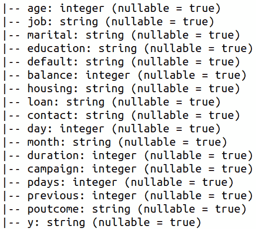图6.2–读入银行数据集的模式
- 现在，我们可以定义我们的UDF，它将使用Python
datetime库将月份的字符串表示转换成整数:import datetime def month_as_int(month): month_number = datetime.datetime.strptime(month, "%b").month return month_number
- 如果我们想在Spark SQL中应用我们的函数，那么我们必须将函数注册为UDF。
register()函数的参数是函数的注册名称、我们刚刚编写的Python函数的名称以及返回类型。默认情况下，返回类型是StringType()，但是我们在这里已经明确了:from pyspark.sql.types import StringType spark.udf.register("monthAsInt", month_as_int, StringType()) - Finally, now that we have registered the function, we can apply it to our data. First, we will create a temporary view of the bank dataset and then run a Spark SQL query against it that references our UDF. Running the following syntax with the
show()command gives the result shown in Figure 6.3, which is our desired output:data.createOrReplaceTempView('bank_data_view') spark.sql(''' select *, monthAsInt(month) as month_as_int from bank_data_view ''').show()用
show()命令运行前面的语法表明我们已经成功地计算了新列。生成的DataFrame的最后几列如下所示: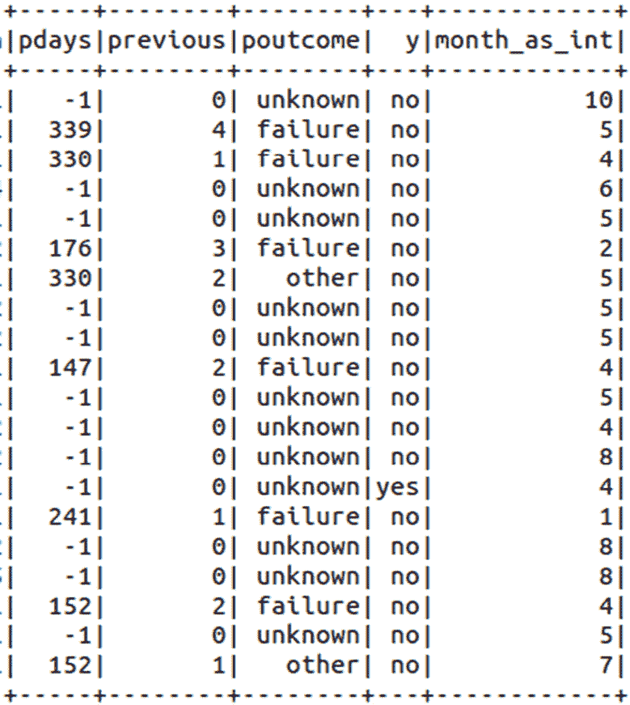图6.3–通过应用我们的UDF，成功计算出新列
- 或者，我们可以用下面的语法创建我们的UDF，并将结果应用到Spark
DataFrame。这给了我们与前面截图相同的结果:from pyspark.sql.functions import udf month_as_int_udf = udf(month_as_int, StringType()) df = spark.table("bank_data_view") df.withColumn('month_as_int', month_as_int_udf("month")).show() - 最后，PySpark还为创建我们的UDF提供了一个很好的装饰语法。下面的代码块也给出了与前面的屏幕截图相同的结果:
@udf("string") def month_as_int_udf(month): month_number = datetime.datetime.strptime(month, "%b").month return month_number df.withColumn('month_as_int', month_as_int_udf("month")).show()
这显示了我们如何在UDF中应用一些简单的逻辑，但是对于我们使用这种方法大规模部署模型，我们必须将ML逻辑放入函数中，并以相同的方式应用它。如果我们想使用一些我们在数据科学世界中已经熟悉的标准工具，比如pandas和scikit-learn，这可能会变得有点棘手。幸运的是，我们可以使用另一个有一些好处的选项。我们现在将讨论这个问题。
当我们在Python中工作时，当前考虑的UDF有一个小问题，即在JVM和Python之间转换数据需要一段时间。绕过的一个方法是使用所谓的pandas UDF，它使用Apache Arrow库来确保快速读取数据以执行我们的UDF。这给了我们UDF的灵活性，没有任何减速。
pandas UDFs也非常强大，因为它们使用——你猜对了——pandas系列和DataFrame对象的语法。这意味着许多习惯于与熊猫一起在本地构建模型的数据科学家可以很容易地使用Spark修改他们的代码以扩大规模。
作为一个例子，让我们看看如何将一个简单的分类器应用到我们在本书前面使用的葡萄酒数据集。请注意，该模型并未针对该数据进行优化；我们只是展示了一个应用预训练分类器的例子。
- 首先，让我们创建一个简单的
sklearn模型:import sklearn.svm import sklearn.datasets clf = sklearn.svm.SVC() X, y = sklearn.datasets.load_wine(return_X_y=True) clf.fit(X, y)
- 然后，我们可以将特征数据纳入Spark数据框架，向您展示如何在后期应用熊猫UDF:
df = spark.createDataFrame(X.tolist())
- 熊猫UDF非常容易定义。我们只需在函数中编写我们的逻辑，然后添加
@pandas_udf装饰器，其中我们还必须为函数提供输出类型。在最简单的情况下，我们可以用训练好的模型来包装执行预测的过程(通常是串行的或者仅仅是局部并行的):import pandas as pd from pyspark.sql.types import IntegerType from pyspark.sql.functions import pandas_udf @pandas_udf(returnType=IntegerType()) def predict_pd_udf(*cols): X = pd.concat(cols, axis=1) return pd.Series(clf.predict(X))
- 最后，我们可以通过传递函数所需的适当输入，将它应用到包含数据的Spark
DataFrame。在本例中，我们将传入特性的列名，共有13个:col_names = ['_{}'.format(x) for x in range(1, 14)] df_pred = df.select('*', predict_pd_udf(*col_names).alias('class')) - 现在，如果您查看结果，您会看到
df_pred数据帧的前几行如下所示:
图6.4–应用简单熊猫UDF的结果
这就完成了我们在Spark中的UDF和pandas UDFs的旋风之旅，它允许我们采用串行Python逻辑，例如数据转换或我们的ML模型，并以明显并行的方式应用它们。
在下一节中，我们将关注如何设置自己在云中执行基于Spark的计算。
云上的火花
从前面的讨论中可以清楚地看到，编写和部署基于PySpark的ML解决方案可以在您的笔记本电脑上完成，但是为了让您看到大规模工作的好处，您必须手头有一个适当规模的计算集群。调配这种基础架构可能是一个漫长而痛苦的过程，但正如本书中已经讨论过的，主要的公共云提供商提供了大量的基础架构选项。
对于Spark，AWS有一个特别好的解决方案，叫做Elastic Map Reduce(EMR)，这是一个托管的大数据平台，允许您轻松配置跨大数据生态系统的几种不同风格的集群。在本书中，我们将关注基于Spark的解决方案，因此我们将关注创建和使用手头有Spark工具的集群。
在下一节中，我们将通过一个具体的例子，在EMR上构建一个Spark集群，然后在其上部署一个简单的基于Spark MLlib的应用程序。
因此，让我们用 AWS EMR 探索一下云中的Spark吧！
AWS EMR示例
为了理解EMR是如何工作的，我们将继续实践，本书的其余部分将跟随并深入一个例子。在讨论如何编写和部署我们的第一个PySpark ML解决方案之前，我们将从学习如何创建一个全新的集群开始。让我们开始吧:
- First, navigate to the EMR page on AWS and find the Create Cluster button: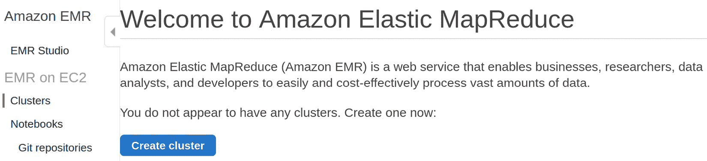
图6.5–创建我们的EMR集群
- Next, specify the S3 bucket where we will store our logs and other metadata: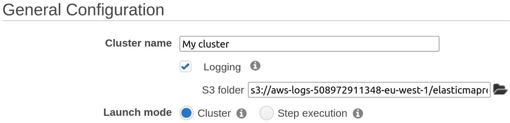
图6.6–将S3存储分配给我们的EMR集群
- Then, define the application type. We will select the Spark option: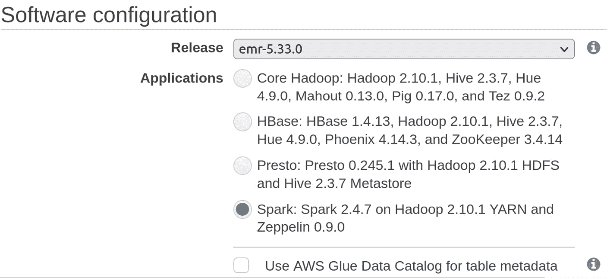
图6.7–配置我们想要的EMR集群类型
- Next, we must select the hardware for our cluster. Here, we can just select a small m1.medium machine specification and create the smallest cluster possible (1 master and 1 core node) since this is for demonstration purposes. You can also choose to scale your clusters based on workload if required but beware of the cost implications of this!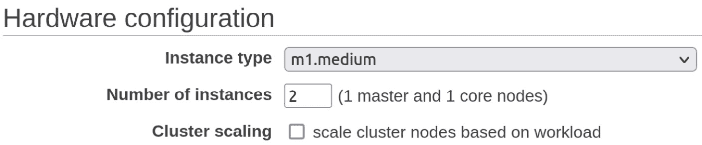
图6.8–定义我们的集群硬件规格
- Finally, we can configure the security if we wish to. In this case, we will just let AWS define some default values and not define an EC2 key pair. When you use this in production, it is advised that you make sure you understand how to make your services secure for your network and tenancy (or seek the advice of someone in your organization who knows how):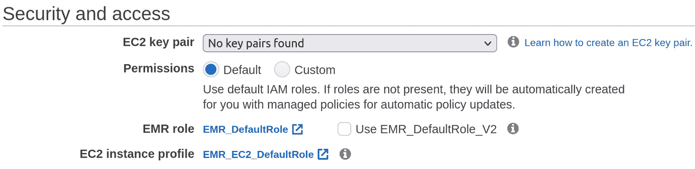
图6.9–为我们的集群配置安全性
- And that's it! Our EMR cluster is now created. We will be redirected to the following page: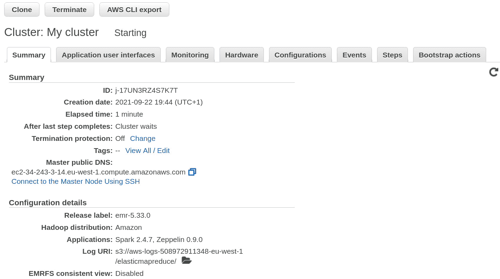
图6.10–我们的EMR集群的审查页面
在启动我们的EMR集群之后，我们希望能够向它提交工作。这里，我们将修改我们在第3章 、从模型到模型工厂中生成的示例Spark MLlib管道，以分析银行数据集，并将其作为一个步骤提交给我们新创建的集群。我们将把它作为一个独立的PySpark脚本来完成，作为我们应用程序中的一个步骤，但是很容易在此基础上构建更复杂的应用程序。
- 首先，我们将从 第三章 、从模型到模型工厂中提取代码，并基于我们围绕良好实践的讨论执行一些不错的重构。首先，我们可以更有效地模块化代码，以便它包含一个提供所有建模步骤的函数(为了简洁起见，这里没有再现所有步骤)。我们还包括了最后一步，将建模的结果写入一个
parquet文件:def model_bank_data(spark, input_path, output_path): data = spark.read.format("csv")\ .option("sep", ";")\ .option("inferSchema", "true")\ .option("header", "true")\ .load(input_path) data = data.withColumn('label', f.when((f.col("y") == "yes"), 1).otherwise(0)) # ... data.write.format('parquet')\ .mode('overwrite')\ .save(output_path) - 在此基础上，我们将把所有的主样板代码包装成一个主函数，可以在程序的入口点
if __name__=="__main__":调用 - 我们将前面的函数放入一个名为
emr_sparkmllib.py的脚本中，稍后将提交给我们的EMR集群:import argparse from pyspark.sql import SparkSession from pyspark import SparkContext from pyspark.sql import functions as f from pyspark.mllib.evaluation import BinaryClassificationMetrics, MulticlassMetrics from pyspark.ml.feature import StandardScaler, OneHotEncoder, StringIndexer, Imputer, VectorAssembler from pyspark.ml import Pipeline, PipelineModel from pyspark.ml.classification import LogisticRegression def model_bank_data(spark, input_path, output_path): ... def main(): ... if __name__ == "__main__": main()
- 现在，要将这个脚本提交给我们刚刚创建的EMR集群，我们需要找出集群ID，我们可以从AWS UI中或者通过运行下面的命令获得这个ID:
aws emr list-clusters --cluster-states WAITING
- 然后，我们需要将
emr_sparkmllib.py脚本发送到S3，由集群读取。我们可以使用CLI或AWS控制台创建一个名为mleip-emr-ml-simple的S3存储桶来存储这个和我们的其他工件(参见 第5章 、部署模式和工具)。一旦复制完毕，我们就为最后的步骤做好了准备。 - Now, we must submit the script using the following command, with
<CLUSTER_ID>replaced with the ID of the cluster we just created. After a few minutes, the step should have completed and written the outputs to theresults.parquetfile in the same S3 bucket:aws emr add-steps \ --cluster-id <CLUSTER_ID> \ --steps Type=Spark, Name="Spark Application Step",ActionOnFailure=CONTINUE,Args=[s3://mleip-emr-ml-simple/emr_sparkmllib.py,--input_path,s3://mleip-emr-ml-simple/bank.csv --output_path,s3://mleip-emr-ml-simple/results.parquet]
就是这样——这就是我们如何使用AWS EMR开始在云上开发PySpark ML管道！
在下一节中，我们将探索通过使用所谓的无服务器工具来扩展我们的解决方案的另一种方法。
构建无服务器基础设施
每当我们做任何ML或软件工程时，我们都必须在计算机上运行必要的任务和计算，通常已经有适当的网络、安全和其他协议和软件，我们经常提到这些已经构成了我们的基础设施。我们基础设施的很大一部分是我们用来运行实际计算的服务器。这可能看起来有点奇怪，所以让我们从谈论无服务器基础设施开始(怎么会有这样的事情？).本节将解释这一概念，并向您展示如何使用它来扩展您的ML解决方案。
无服务器作为一个术语有点误导，因为它并不意味着没有物理服务器在运行你的程序。然而，这确实意味着，您正在运行的程序不应该被认为是静态托管在一台机器上，而是底层硬件之上的另一层上的短暂实例。
无服务器工具为您的 ML解决方案带来的好处包括(但不限于)以下几点:
- 没有服务器！不要低估通过将基础设施管理卸载给云提供商可以节省的时间和精力。
- 简化的伸缩性:通常很容易定义无服务器组件的伸缩行为，例如，通过使用明确定义的最大实例。
- 进入门槛低:这些组件通常非常容易设置和运行，允许您和您的团队成员专注于编写高质量的代码、逻辑和模型。
- 自然集成点:无服务器工具通常很适合用于其他工具和组件之间的转换。它们易于设置，这意味着您可以立即启动并运行简单的任务来传递数据或触发其他服务。
- 简化服务:一些无服务器工具非常适合为你的ML模型提供服务层。前面提到的可伸缩性和低准入门槛意味着您可以快速创建一个非常可伸缩的服务，该服务可以根据请求或其他事件的触发提供预测。
无服务器功能的最好和最广泛使用的例子之一是 AWS Lambda ，它允许我们通过我们常用的开发工具用简单的web浏览器界面或用各种语言编写程序，然后让它们完全独立于任何已建立的基础设施运行。Lambda是一个惊人的低门槛解决方案，可以让一些代码启动、运行并扩展。然而，它的主要目的是创建简单的API，可以通过HTTP请求访问。如果你的目标是一个事件驱动或请求驱动的系统，用Lambda部署你的ML模型特别有用。
要了解这一点，让我们构建一个基本系统，它将传入的图像数据作为带有JSON主体的HTTP请求，并使用预构建的scikit-learn模型返回包含数据分类的类似消息。本演练基于位于https://AWS . Amazon . com/blogs/compute/deploying-machine-learning-models-with-server less-templates/的AWS示例。
为此，我们可以利用已经构建和维护的模板作为AWS 无服务器应用程序模型 ( SAM )框架的一部分来节省大量时间(https://AWS . Amazon . com/about-AWS/whats-new/2021/06/AWS-SAM-launchs-machine-learning-inference-templates-for-AWS-lambda/)。
要在您的相关平台上安装 AWS SAM CLI，请遵循https://docs . AWS . Amazon . com/server less-application-model/latest/developer guide/server less-SAM-CLI-install . html中的说明。
现在，让我们执行以下步骤来设置模板Lambda部署，以便在无服务器基础设施上托管和服务ML模型:
- First, we must run the
sam initcommand and select the AWSQuick Start Templatesoption: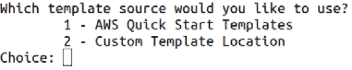图6.11–从AWS SAM框架中选择模板
- We will be offered a choice of
package typeSelectimageso that we can create a Docker container hosted on Elastic Container Registry (ECR):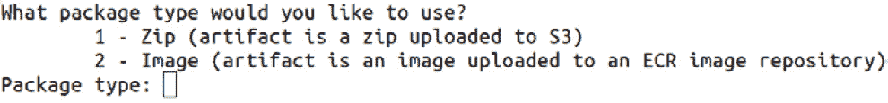图6.12–为SAM模板选择包类型
- Next, we have to select the base image we want to use. In line with all the other examples in this book, let's choose
python3.8-base: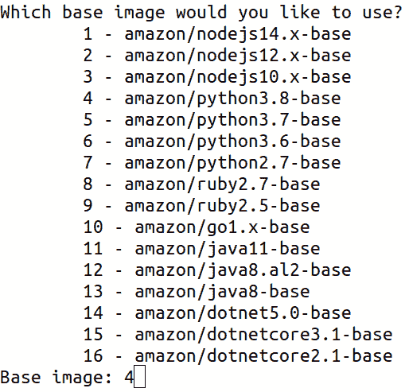图6.13–为SAM模板选择基础映像
- Now, we must give the project a name. We shall call ours
mleip-lambda-example:图6.14–指定我们的项目名称
- You will see that the repository is cloned from the remote repository where all of the SAM templates are hosted, before being prompted for the template you wish to use. We will select the scikit-learn API option here: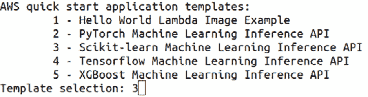
图6.15–克隆scikit-learn SAM应用程序模板
- If the previous step was successful, a folder should have been generated in your current directory with the chosen name that contains the code template: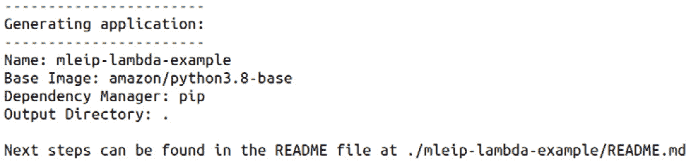
图6.16–成功创建我们的SAM应用程序模板文件夹
请注意，前面的步骤已经为一个基于scikit-learn的系统创建了一个模板，用于对手写数字进行分类。
如果您想要部署这个示例，请遵循下面的几个步骤。
- First, we must build the container locally by running
.aws-sam/buildin themleip-lambda-exampledirectory. Upon a successful build, you should receive a success message similar to the following in your Terminal:Build Succeeded Built Artifacts : .aws-sam/build Built Template : .aws-sam/build/template.yaml Commands you can use next ========================= [*] Invoke Function: sam local invoke [*] Deploy: sam deploy –guided
现在，我们可以在本地测试服务，以确保存储库提供的模拟数据一切正常。这使用了一个JSON文件，该文件编码了一个基本的图像，并为服务运行推断步骤。如果这样做了，您将看到Lambda调用的输出如下所示:
$sam local invoke InferenceFunction --event events/event.json Invoking Container created from inferencefunction:python3.8-v1 Image was not found. Building image................. Skip pulling image and use local one: inferencefunction:rapid-1.26.0. START RequestId: bef853a2-c0cc-478c-8b11-d3805632d72f Version: $LATEST END RequestId: bef853a2-c0cc-478c-8b11-d3805632d72f REPORT RequestId: bef853a2-c0cc-478c-8b11-d3805632d72f Init Duration: 0.09 ms Duration: 1838.22 ms Billed Duration: 1900 ms Memory Size: 5000 MB Max Memory Used: 5000 MB {"statusCode": 200, "body": "{\"predicted_label\": 3}"}(mleng) - Since we have gone the Docker image route, deploying our Lambda function will require the use of ECR. To authenticate the Docker client with the ECR registry, run the following command with your region and account ID in the appropriately marked places:
aws --region <region> ecr get-login-password | docker login --username AWS --password-stdin <accountID>.dkr.ecr.<region>.amazonaws.com
然后，您将收到一条消息，内容如下:
Login Succeeded
- 现在，我们必须为我们的解决方案创建ECR存储库。让我们称我们的为
mleip-lambda-example-repo，这样它就符合我们对代码库的命名:aws ecr create-repository --repository-name mleip-lambda-example-repo --image-tag-mutability MUTABLE --image-scanning-configuration scanOnPush=true
- If this step is successful, you should see something like the following code block returned in your Terminal (once again, with
<region>and<accountID>replaced by their respective values for your AWS account):{ "repository": { "repositoryArn": "arn:aws:ecr:<region>:<accountID>:repository/mleip-lambda-example-repo", "registryId": "<accountID>", "repositoryName": "mleip-lambda-example-repo", "repositoryUri": "<accountID>.dkr.ecr.<region>.amazonaws.com/mleip-lambda-example-repo", "createdAt": "2021-07-14T19:06:25+01:00", "imageTagMutability": "MUTABLE", "imageScanningConfiguration": { "scanOnPush": true }, "encryptionConfiguration": { "encryptionType": "AES256" } } }重要说明
我们将需要
repositoryUri用于后面的步骤，所以把它放在手边。 - 现在，我们可以通过运行以下命令来触发与
SAM打包在一起的引导部署功能:sam deploy --guided
- 对于随后的提示，我们可以每次按下 Enter 来选择缺省值，直到要求我们输入
Image Repository for InferenceFunction，这是我们在上一步中设置的，现在可以复制进来了。对于剩下的步骤，我们可以点击回车(或yes)，直到系统询问我们是否要Deploy this changeset?。例如，最初的几个问题和回答将类似于(将<repositoryURI>替换为来自步骤5 的ECR库URI):Configuring SAM deploy ====================== Looking for config file [samconfig.toml] : Not found Setting default arguments for 'sam deploy' ========================================= Stack Name [sam-app]: AWS Region [eu-west-2]: Image Repository for InferenceFunction: <repositoryURI> inferencefunction:python3.8-v1 to be pushed to <repositoryURI>:inferencefunction-b5712d3d8d03-python3.8-v1 #Shows you resources changes to be deployed and require a 'Y' to initiate deploy Confirm changes before deploy [y/N]: y #SAM needs permission to be able to create roles to connect to the resources in your template Allow SAM CLI IAM role creation [Y/n]: Y InferenceFunction may not have authorization defined, Is this okay? [y/N]: y Save arguments to configuration file [Y/n]: Y SAM configuration file [samconfig.toml]: SAM configuration environment [default]:
- Finally, upon completing these steps, you will get the following message, confirming that the deployment has been successful and that our Lambda function is up and running!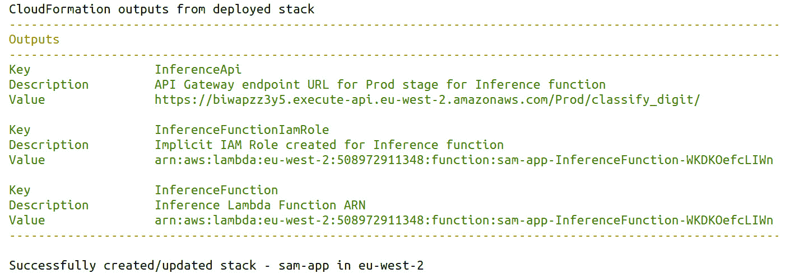
图6.17–成功部署我们的AWS Lambda功能
- As a quick test to confirm this is working, we can use a tool such as Postman to hit our shiny new Lambda API. Simply copy the
InferenceApiURL from the output screen from Step 8 as the destination for the request, select POST for the request type, and then choose binary as the body type. Then, you can choose any image to send up to the API (in this case, small images are more likely to work; larger images can cause errors for this standard template):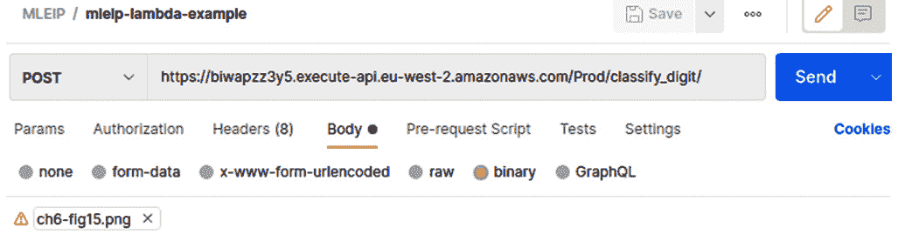图6.18–用Postman调用Lambda函数的端点
- You can also test this more programmatically with a
CURLcommand like the following – just replace the URL and image locations with the appropriate values and you are good to go:curl --location --request POST 'https://biwapzz3y5.execute-api.eu-west-2.amazonaws.com/Prod/classify_digit/' \ --header 'Content-Type: image/png' \ --data-binary '@/home/andrew/dev/github/Machine-Learning-Engineering-with-Python/chapter6/lambda/mleip-lambda-example/events/ch6-fig15.png'
在该步骤和步骤9 中，Lambda函数的响应体如下:
{ "predicted_label": 5 }就这样——我们刚刚使用AWS Lambda构建并部署了一个简单的ML推理服务！
在下一节中，我们将触及本章将讨论的扩展我们的解决方案的最后一种方式，即使用K8s和Kubeflow来横向扩展容器化的应用程序。
用Kubernetes大规模集装箱化
我们已经介绍了如何使用容器来构建和部署我们的ML解决方案。下一步是理解如何编排和管理几个容器来大规模部署和运行应用程序。这就是开源工具 K8s 的用武之地。
K8s是一个非常强大的工具，它提供了各种不同的功能，帮助我们创建和管理高度可扩展的容器化应用程序，包括(但不限于)以下内容:
- 负载平衡 : K8s会为你管理将传入的流量路由到你的容器，这样负载会平均分配。
- 水平伸缩 : K8s提供了简单的接口，这样您就可以随时控制您拥有的容器实例的数量，允许您在需要时进行大规模伸缩。
- 自我修复:内置管理功能，可更换或重新安排未通过健康检查的组件。
- 自动回滚 : K8s存储您系统的历史，这样如果出现问题，您可以恢复到以前的工作版本。
所有这些功能都有助于确保您部署的解决方案是健壮的，能够在任何情况下按要求执行。
K8s旨在通过使用微服务架构来确保从一开始就嵌入上述功能，控制平面与节点(服务器)交互，每个节点(服务器)托管运行应用程序组件的pod(一个或多个容器)。
K8s给你的关键是通过创建基本解决方案的副本，基于负载扩展应用程序的能力。如果您正在构建带有API端点的服务，而这些API端点可能会在不同时间面临需求激增，那么这一点非常有用。要了解如何做到这一点，请参见https://kubernetes . io/docs/concepts/workloads/controllers/deployment/# scaling-a-deployment:
图6.19–K8s架构
但是ML呢？在这种情况下，我们可以关注K8s生态系统的一个更新的部分: Kubeflow 。
Kubeflow将自己标榜为K8s(【https://www.kubeflow.org/】T3)的 ML工具包，所以作为ML工程师，让知道这个快速发展的解决方案是有意义的。这是一个非常令人兴奋的工具，也是一个活跃的发展领域。K8s的水平扩展的概念在这里仍然适用，但是Kubeflow提供了一些标准化的工具，用于将您构建的管道转换为标准的K8s资源，然后可以按照前面描述的方式管理和提供资源。这可以帮助减少样板文件，让我们，作为ML工程师，专注于构建我们的建模逻辑，而不是建立基础设施，即使K8s已经是一个很好的抽象。
本节只简单介绍了K8s和Kubeflow，以确保您了解这些用于探索的工具。有关 K8s和Kubeflow的更多细节，请查阅文档并遵循在https://kubernetes.io/和https://www.kubeflow.org/docs/的教程。我还想推荐另一个名为《Kubernetes in Production Best Practices》的Packt书名，作者是 Aly Saleh 和Murat Karslioglu:https://www . packtpub . com/product/Kubernetes-in-Production-Best-Practices/9781800202450。
总结
在这一章中，我们研究了如何采用我们在过去几章中构建的ML解决方案，并思考了如何将它们扩展到更大的数据量或更多的预测请求。为此，我们主要关注于 Apache Spark ，因为这是分布式计算最流行的通用引擎。在讨论Apache Spark的过程中，我们回顾了本书之前使用的一些编码模式和语法。通过这样做，我们对在PySpark中开发时如何以及为什么做某些事情有了更透彻的理解。我们详细讨论了UDF的概念，以及如何使用它们来创建大规模可扩展的ML工作流。
在这之后，我们探索了如何在云上使用Spark，特别是通过AWS提供的Elastic Map Reduce(EMR)服务。然后，我们看了一些可以扩展我们的解决方案的其他方法；也就是说，通过无服务器架构和容器的水平扩展。在前一种情况下，我们演示了如何使用 AWS Lambda 构建服务于ML模型的服务。这使用了AWS无服务器应用程序管理框架提供的标准模板。最后，我们提供了如何使用K8s和Kubeflow水平扩展ML管道的高级视图，以及使用这些工具的一些其他好处。
在下一章中，我们将把我们新的ML工程知识的许多方面结合起来，构建一个预测微服务，构建在第1章 、ML工程简介中所示的基本模型示例之上。